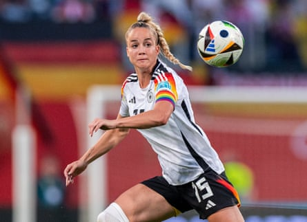
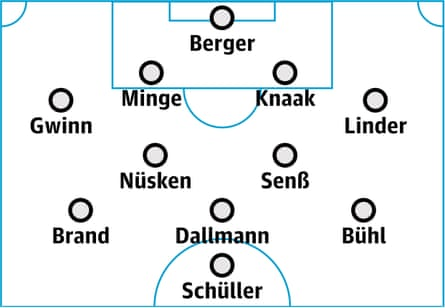

This article is part of the Guardian’s Euro 2025 Experts’ Network , a cooperation between some of the best media organisations from the 16 countries who qualified. theguardian.com is running previews from two teams each day in the run-up to the tournament kicking off on 2 July.
Overview
The past few years have seen Germany lose a European Championship final , exit the 2023 World Cup at the group stage , and finish third at the Olympics. Which begs the question: how good (or bad) is the German national team? No one seems to know, not even the players, as some of them have admitted.
The past two years have also been a period of upheaval. The urgently needed analysis of the World Cup had to wait, as Martina Voss-Tecklenburg took a break but remained in post. She later revealed that she had suffered from depression and panic attacks before the World Cup. Voss-Tecklenburg’s departure was eventually announced in November, with the DFB saying a fresh start was needed.
Horst Hrubesch was appointed interim coach and they finished third at Paris 2024 but did not always play well. Several important players – such as Alexandra Popp, Svenja Huth, Marina Hegering and Merle Frohms – retired from international duty after the Olympics.
In March 2024 Christian Wück was finally given the full-time job. Under the 51-year-old things have been up and down. A very poor first half might be followed by an outstanding second, or vice-versa. Wück has not held back with his criticism. “Unfortunately we are not yet where we would like to be,” he said in March. Klara Bühl admitted in a Kicker podcast “that there had been many “ups and downs”. But she added that could be to Germany’s advantage because “maybe people aren’t expecting so much from us”.
Germany have had a successful 2025 (five wins and one draw). They were in fine goalscoring form for their last two Nations League games, beating Netherlands 4-0 and putting six past Austria without reply. The main selection headache for Wück was whether to pick Lena Oberdorf. The coach was naturally reluctant to be without arguably the best Germany player but she had not played a game in 2024-25 after tearing her ACL and was left out in the end. Wück said Oberdorf was on the right track “but that the European Championship will be too soon for her”. Eintracht Frankfurt’s Elisa Senß has taken her place.
The coach
There has been a lot of talk about the new national team coach not talking enough. Two players, Felicitas Rauch and Nicole Anyomi, complained about a lack of communication from Christian Wück . The result? Wück and his team talked things through and the coach admitted he had got it wrong. Communication is key and he should know that now. Wück ended his playing career (having played 168 Bundesliga games and won goal of the month in May 1993) at the age of 29 because of injury and pursued a coaching career. He has spent more than a decade with the German FA and in 2023 he won the World Cup with the men’s under-17 team. He tends to favour an attacking style.
Star player
It made perfect sense for Wück to choose Giulia Gwinn as captain. She is only 25 but has more than 60 caps, despite having torn cruciate ligaments in both knees. “Giulia is an absolute key player. She is opinionated and a personality who leads the way both on and off the pitch,” Wück said. In May she released her biography, which went to No 1 on Der Spiegel’s bestseller list. Gwinn, who has more followers on Instagram than any other female German footballer is the face of the national team.
The captain, Giulia Gwinn, in action against Poland in the qualifying rounds.Photograph: Boris Streubel/Getty Images
One to watch
Linda Dallmann is not new on the scene. She is a four-time German league winner and, at 30, one of the most experienced players in the side. But somehow the technically gifted midfielder has often been overlooked. Not any more, though. Wück is counting on the playmaker, who, he says, has the ability to change a game. Dallmann has good spatial awareness and is calm in possession. It is very difficult to take the ball off her. With her, the wingers finally have a teammate they can exchange passes with: a cross into the penalty area is not the only option.
Probable lineup
Status of the domestic top flight
In two words: in crisis. Between 2002 and 2015, Bundesliga teams won nine Champions Leagues but since then other leagues, especially the WSL, have overtaken the German top flight. The move to professionalism is not fast enough and that is why the gap between teams is still huge. In 2024-25 Turbine Potsdam (two-times Champions League winners) were relegated without winning a game. In Europe, Bayern Munich and Wolfsburg were not competitive enough to go as far as the semi-finals. Wolfsburg, in fact, were demolished 10-2 on aggregate by Barcelona.
Realistic aim in Switzerland
After the early exit from the 2023 World Cup targets have been lowered. However, reaching the quarter-finals is still seen as a must. There, Germany could face France or England, when they would be considered underdogs.
The Germany team guide was written by Nicholas Horn for Die Zeit .